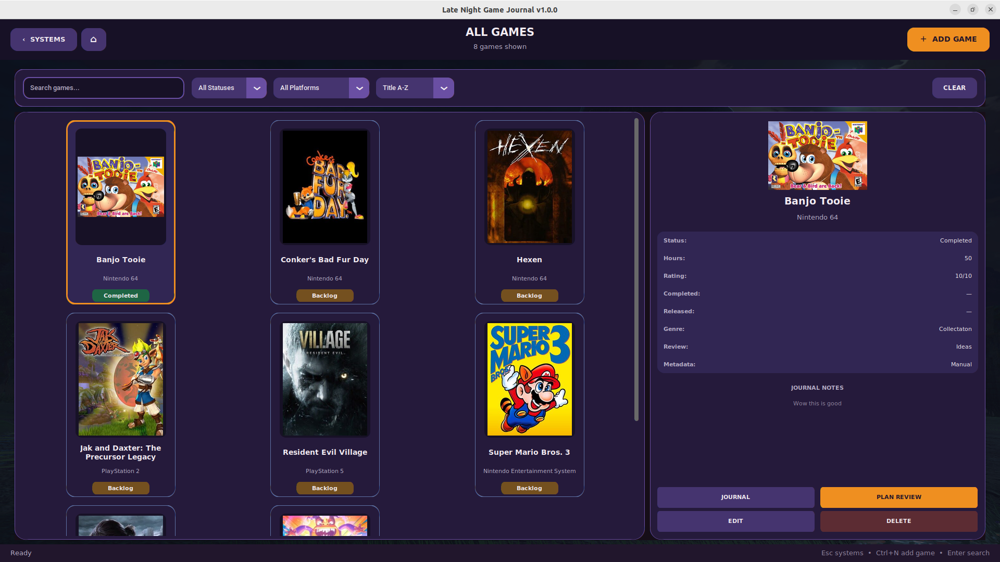
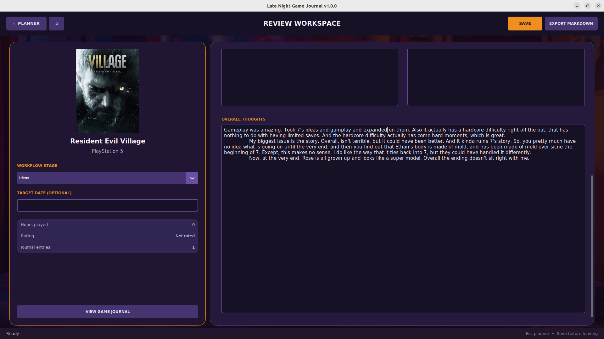
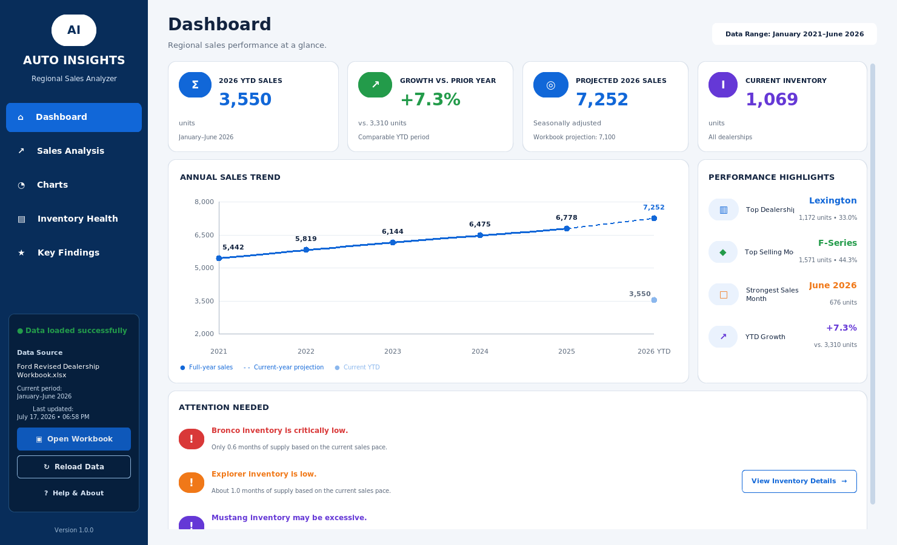
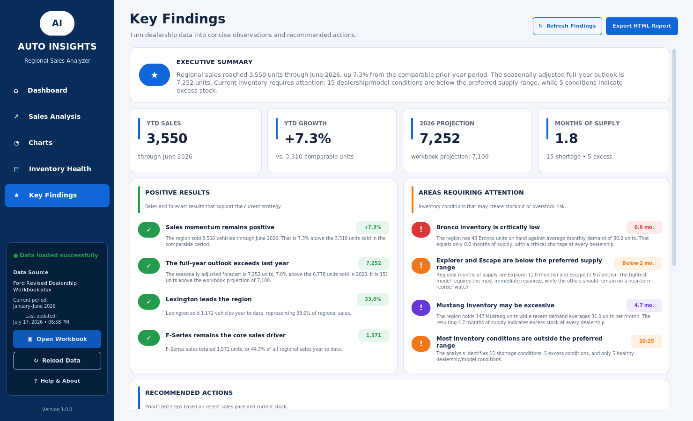
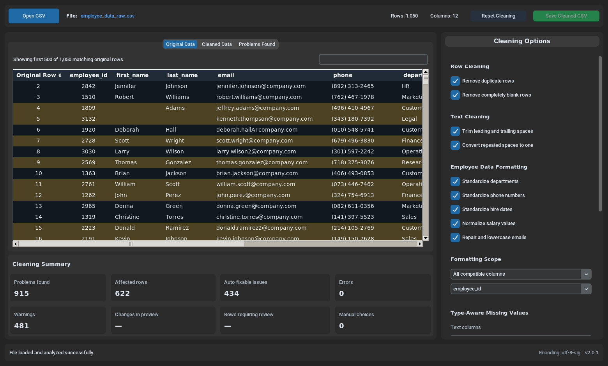
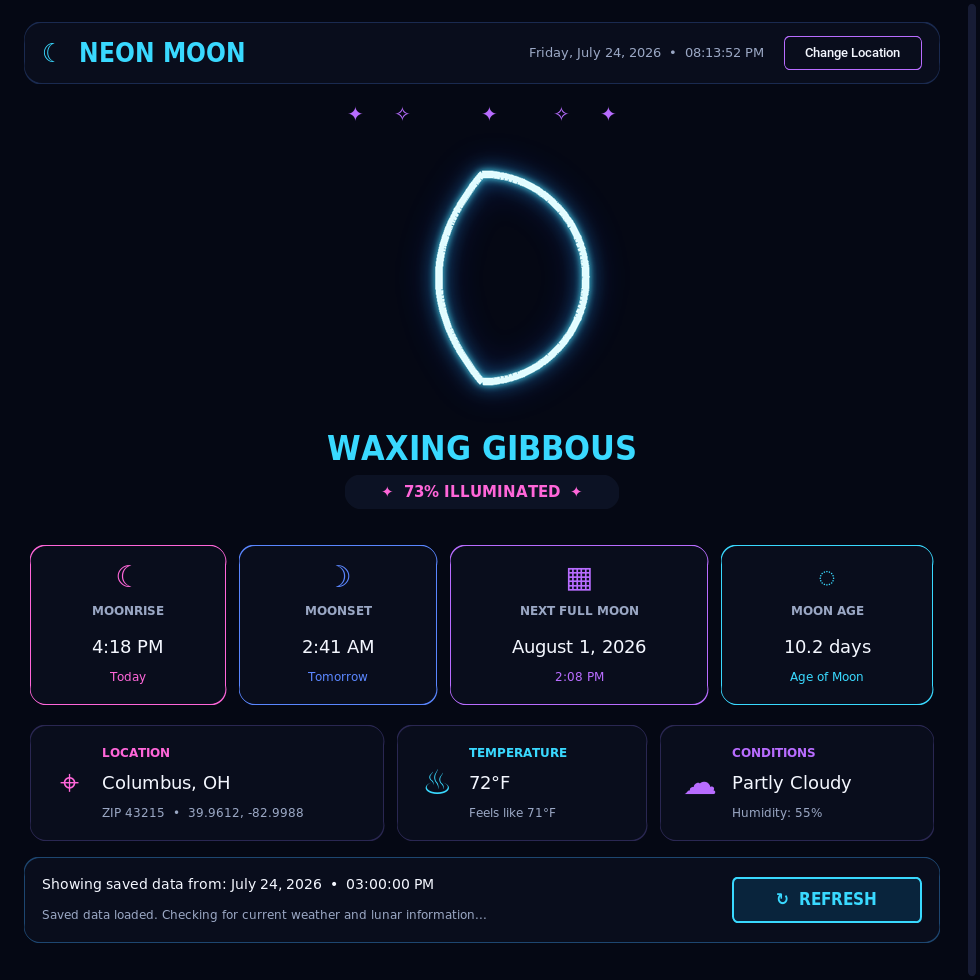
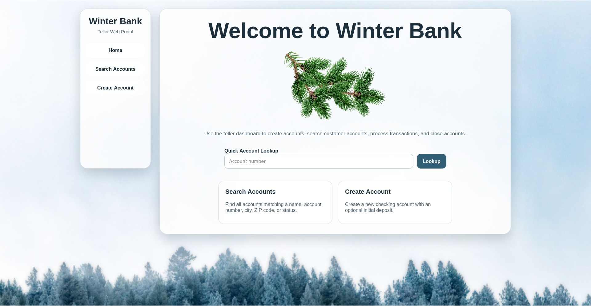
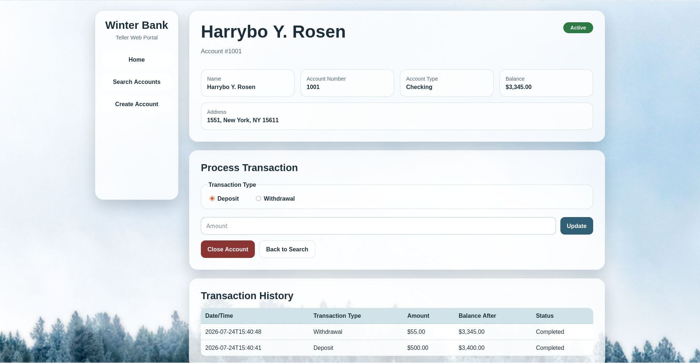
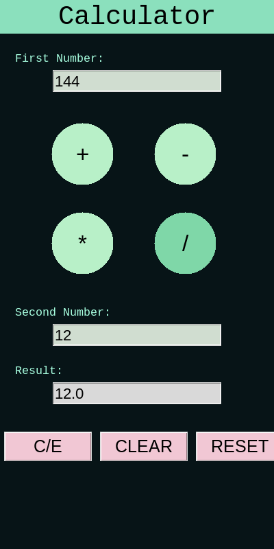

Independently Coded Projects
These projects were designed and coded by me.
Student Records App


A full-stack application built with Node.js, Express, Bootstrap, MongoDB, and Mongoose that allows users to view, filter, update, and delete student records. This project was developed and tested locally.
Technologies: Node.js, Express, Bootstrap, MongoDB, Mongoose, Vue.js
View on GitHubTrip Data App


A full-stack application built with Node.js, Express, Nunjucks, Bootstrap, MongoDB, and Mongoose that allows users to view, filter, create, update, and delete trip data. This project was developed and tested locally.
Technologies: Node.js, Express, Nunjucks, Bootstrap, MongoDB, Mongoose
View on GitHubPersonal Portfolio Website
A responsive website built with HTML, CSS, and JavaScript to showcase my writing, résumé, and programming projects.
Technologies: HTML, CSS, JavaScript, GitHub Pages
View on GitHubAI-Assisted Projects
For each of the following projects, I developed the project concept, defined the functional and visual requirements, selected features, tested each iteration, reported bugs, and directed revisions through the final release. ChatGPT generated the implementation code in response to that direction and feedback. I am publishing these projects as examples of requirements development, product direction, iterative testing, quality assurance, interface design, and responsible AI-assisted software development—not as code I wrote independently from scratch.
Late Night Game Journal


An AI-assisted Python desktop application for managing a game library, recording play-session journals, and planning game reviews.
Technologies: Python, CustomTkinter, SQLite, pytest, IGDB API
View on GitHubAuto Insights


An AI-assisted Python desktop application for analyzing dealership inventory, sales trends, and workbook-based business data.
Technologies: Python, CustomTkinter, Matplotlib, openpyxl, Pandas, pytest
View on GitHubData Cleaning App

An AI-assisted Python desktop application for analyzing, cleaning, correcting, and safely exporting CSV data.
Technologies: Python, CustomTkinter, Pandas, pytest
View on GitHubNeon Moon

An AI-assisted neon Python desktop dashboard displaying live weather and locally calculated lunar information.
Technologies: Python, CustomTkinter, Open-Meteo API, Pillow, PyEphem
View on GitHubWinter Bank


An AI-assisted Flask and MySQL web application that simulates account creation, searching, teller transactions, and account closure.
Technologies: Python, HTML, CSS, Flask, MySQL, pytest
View on GitHubMint Calculator

An AI-assisted mint-themed Tkinter calculator with circular operation buttons and automatic result updates.
Technologies: Python, Tkinter
View on GitHub